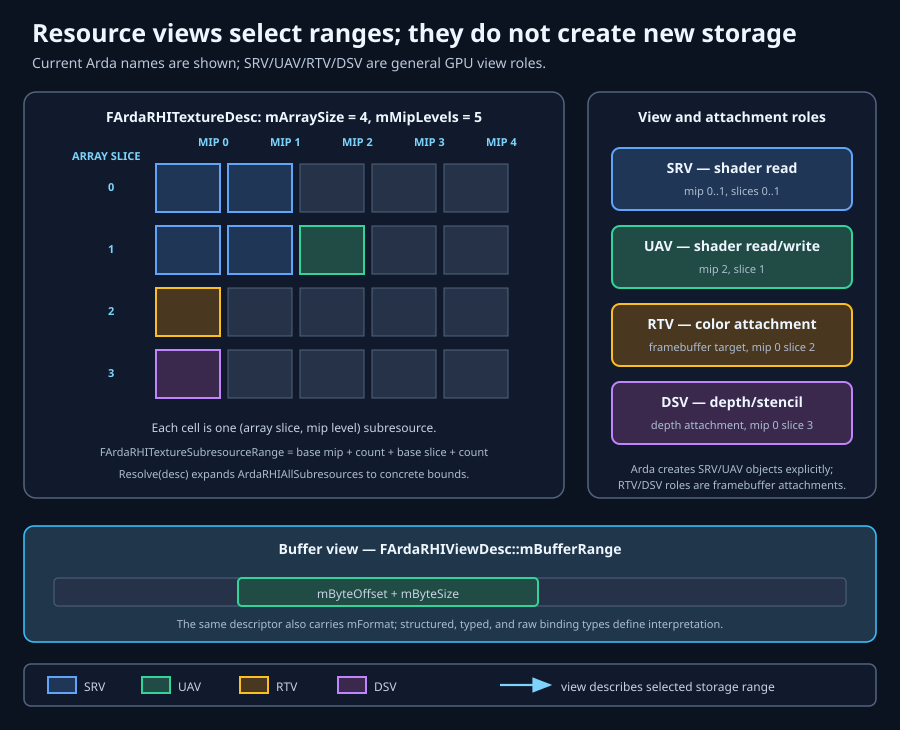

Portable storage, interpretation, and ownership
RHI resources and memory
A production RHI does more than rename native handles. It defines portable storage, interpretation, lifetime, state, and feature contracts so one renderer can remain correct across D3D12, Vulkan, and materially different GPUs.
Learning objectives
After this chapter, you should be able to:
- Reason about a GPU resource as storage whose meaning comes from descriptors, views, bindings, and command state.
- Choose between buffers and textures, then specify texture dimensions, formats, mip levels, array slices, and sample counts coherently.
- Identify a texture subresource precisely and explain why barriers and views may target only part of an allocation.
- Distinguish SRV, UAV, RTV, and DSV access and explain why resource/view separation is essential.
- Select device-local, upload, readback, staging, virtual, or tiled memory strategies without assuming universal support.
- Preserve intrusive ownership, GPU lifetime, and device affinity.
- Build compatible binding layouts, binding sets, and framebuffers and gate advanced resource families by capability.
Prerequisites
Read Architecture and Getting started. You should understand one logical device, asynchronous GPU execution, shader stages, and basic synchronization. The next chapter, Commands, explains how storage transitions between uses.
Fundamentals: resources are abstract GPU storage
A resource answers “where do bytes live and what operations are permitted?” It does not fully answer “what do these bytes mean to this shader or render pass?” Arda represents primary storage with IArdaRHIBuffer and IArdaRHITexture. Their immutable creation descriptions are available through GetDesc().
Buffers: linear byte-addressable storage
A buffer is a one-dimensional byte range. FArdaRHIBufferDesc fixes byte size, optional structure stride or typed format, permitted usage flags, CPU access, initial state, and versioning policy. The same allocation may serve as a vertex buffer, index buffer, constant buffer, indirect-argument buffer, typed/structured/raw SRV, or UAV only when its creation usage permits that role.
- Typed buffers interpret elements through an
EArdaRHIFormat. - Structured buffers use
mStructureStride; the shader and CPU must agree on element layout. - Raw buffers expose byte/word-oriented access and demand explicit offset discipline.
- Vertex and index buffers receive meaning from graphics state, not from storage alone.
Textures: shaped, formatted storage
A texture adds dimensionality, texel format, mip hierarchy, array layering, and possibly multiple samples per pixel. Hardware may swizzle or compress physical storage; callers address logical texels rather than assuming row-major bytes. Use a texture when filtering, normalized coordinates, render attachment semantics, compression, or image-oriented caching matter.
Design tradeoff: one universal byte buffer would be conceptually simple but would discard native image layout, compression, sampling, and attachment optimizations. Separate buffer and texture contracts preserve those capabilities while forcing the caller to choose deliberately.
Texture geometry, formats, and subresources
FArdaRHITextureDesc combines fields that must describe one physically possible image:
mDimensionEArdaRHITextureDimensiondistinguishes 1D, 2D, 3D, cube, array, and multisampled forms. A cube is six square faces per cube; a 3D texture has depth rather than independent array layers.mWidth,mHeight,mDepth- Logical texel extents at mip zero. Unused axes remain one. Mip dimensions shrink toward one.
mFormat- Defines component count, bit width, numeric interpretation, compression, and depth/stencil behavior. UNorm, integer, float, sRGB, block-compressed, and depth formats are not interchangeable.
mMipLevels- The number of image resolutions. Each mip level is distinct storage; sampling may blend adjacent levels, but copies, views, and barriers address them explicitly.
mArraySize- The number of same-shaped layers. Array slices do not shrink. Cube arrays count faces according to the backend-neutral descriptor contract.
mSampleCount- The number of coverage samples per pixel. MSAA storage is not a larger mip chain: multisampled dimensions have restricted view, mip, copy, and resolve behavior.
Texels are formatted values, not always bytes
A texel is one logical texture element. RGBA8UNorm stores four normalized eight-bit channels, while RGBA16Float stores four half-precision channels. BC formats encode blocks of texels, so copy regions and pitches must respect block boundaries. Depth/stencil formats may expose aspect-specific native behavior even when Arda presents one format.
Subresource identity
For ordinary arrays, a texture subresource is the intersection of one mip level and one array slice; depth/stencil aspects may add native distinctions. FArdaRHITextureSubresourceRange selects a rectangle in the mip-by-array grid. ArdaRHIAllSubresources means “resolve through the descriptor,” not an infinite count.

FArdaRHITextureSlice selects a copy region inside one mip and array slice. Do not confuse a spatial slice used by copy operations with a subresource range used by views and state tracking.
Views: controlled interpretations of storage
A view combines a resource with FArdaRHIViewDesc: compatible format override, view dimension, and texture or buffer range. Resource/view separation allows one allocation to be interpreted differently without duplicating memory.
- SRV — shader resource view
- Read-oriented shader access. Arda can create an explicit
IArdaRHIShaderResourceViewwithCreateShaderResourceView, or carry view values inside binding items. - UAV — unordered access view
- Shader read/write or write access through
IArdaRHIUnorderedAccessView. “Unordered” does not mean race-free; barriers and shader-level coordination still establish ordering. - RTV — render-target view
- Color attachment interpretation. Arda expresses it through
FArdaRHIFramebufferTargetand attachment data rather than a standalone public RTV interface. - DSV — depth/stencil view
- Depth/stencil attachment interpretation, including read-only attachment intent. It is likewise represented through framebuffer composition.
Why separation matters
- An array texture can expose all slices to a shader while one slice is attached for rendering.
- A mip chain can expose all mips for sampling and one mip for UAV generation.
- Typeless-compatible storage can receive a legal typed interpretation at view creation.
- Hazard tracking can transition only the subresources that a pass uses.
- Descriptor caches can reuse immutable view values independently of allocation lifetime.
Descriptors are values
Arda creation descriptions are plain comparable/hashable values. Validate overloads reject malformed values before native creation; HashValue and equality support deterministic caches. Debug names are diagnostic metadata and intentionally do not alter semantic identity.
Memory placement, CPU access, and staging
Fast GPU storage and convenient CPU access are often opposing goals. A production renderer separates durable device-local resources from upload and readback paths rather than mapping every allocation.
Initial state is an executable promise
EArdaRHIResourceState declares the known initial use: copy destination, shader resource, render target, depth write, present, and other roles. Usage flags say what a resource may do; state says how it is synchronized now. mbKeepInitialState asks tracking to return to or preserve that state across command-list boundaries. A false declaration can produce a valid object and invalid GPU execution.
CPU-visible paths
EArdaRHICpuAccesson a buffer declares no access, read, or write. CPU-visible memory may be slower for GPU access and may require flush/invalidate behavior in the native backend.IArdaRHIStagingTextureprovides a portable texture transfer object whenmbStagingTexturesis supported.MapStagingTexturereturns data and row pitch. Iterate rows using the returned pitch; never infer tight packing from width and format.- Upload, copy, signal, and only then recycle CPU memory. For readback, copy, wait for completion, map, consume, and unmap.
Explicit heaps and virtual resources
FArdaRHIHeapDesc selects EArdaRHIHeapType: device-local, upload, or readback. Virtual resources defer physical placement. Query FArdaRHIMemoryRequirements, honor size and alignment, then call the matching Bind*Memory operation.
Tradeoff: committed resources simplify lifetime and reduce aliasing mistakes. Explicit heaps improve pooling, aliasing, and budget control but require alignment, non-overlap, residency, and GPU-completion discipline. Gate them with mbHeaps and mbVirtualResources.
Intrusive ownership, GPU lifetime, and device affinity
Every RHI object derives from IArdaRHIResource, which exposes AddRef(), Release(), resource type, and debug name. TArdaRHIRef<T> implements intrusive reference counting: copy retains, move transfers, and reset releases.
- CPU ownership prevents wrapper destruction; it does not by itself prove the GPU has finished.
- Descriptors containing references retain those objects. Views expose and retain their underlying resource through implementation ownership.
- Mutable descriptor-table writes deliberately do not retain written resources. The caller must preserve them through every in-flight table use.
- All participating objects must come from the same device. Cross-device references return
WrongDevicerather than being silently reinterpreted.
Borrowed native imports
FArdaRHINativeTextureImportDesc and FArdaRHINativeBufferImportDesc pair a native identity with native API type, a complete RHI descriptor, ownership mode, and known initial state. Borrowed leaves external ownership with the caller while the wrapper retains whatever native reference its backend requires.
Binding layouts, sets, and framebuffer composition
Declaration before population
Binding layouts declare the shader-visible ABI. FArdaRHIBindingLayoutDesc records stage visibility, register space or descriptor set, and items with slot, array size, and EArdaRHIBindingType. It answers “what shape of resources may be bound?”
Binding sets answer “which resources are bound now?” FArdaRHIBindingSetDesc pairs one layout with FArdaRHIBindingItem values. Slot, array element, type, resource, and view must agree with the layout and shader ABI.
Framebuffer composition
FArdaRHIFramebufferDesc collects color targets and an optional depth target. Each target pairs a retained texture with FArdaRHIFramebufferAttachment: subresources, optional format, and read-only intent.
- Attachment extents and sample counts must form one renderable surface.
- Color/depth formats and sample count must match the graphics pipeline description.
- A framebuffer describes attachments; command state still supplies pipeline, bindings, vertex/index inputs, viewports, and scissors.
- Read-only depth intent allows depth testing without depth writes when pipeline and state agree.
Capability-gated advanced resource families
Initialization guarantees a usable graphics device, not every modern feature. Query FArdaRHICapabilities and treat unsupported status as an ordinary branch.
- Queries and fences
IArdaRHIEventQueryreports queue completion,IArdaRHITimerQuerymeasures GPU intervals, andIArdaRHIGpuFenceis a one-signal-at-a-time queue fence facade. Use for pacing, retirement, and profiling whenmbQueriesis true.- Bindless descriptor tables
FArdaRHIBindlessLayoutDescenables shader indexing into large tables whenmbBindlessis true. It reduces rebinding but increases lifetime, bounds, update, and residency complexity.- Meshlet pipelines
FArdaRHIMeshletPipelineDescreplaces traditional vertex assembly with amplification/mesh stages. Use for GPU-driven geometry only whenmbMeshShadersis true; keep a conventional graphics path.- Ray-tracing acceleration structures
FArdaRHIAccelStructDescrepresents BLAS geometry or TLAS instances. Build cost, update policy, compaction, scratch/storage pressure, and synchronization differ from ordinary buffers. Require both ray-tracing and acceleration-structure capability.- Sampler feedback
FArdaRHISamplerFeedbackTextureDescrecords which mip regions sampling needed. It can drive texture streaming whenmbSamplerFeedbackis true, but feedback decode and delayed decisions add latency.- Tiled resources
mbTiled,FArdaRHITextureTiling, andFArdaRHITextureTileMappingdecouple virtual texture coordinates from physical heap tiles. Use for sparse mega-textures whenmbTiledTexturesis true and a residency manager exists.- Opacity micromaps
FArdaRHIOpacityMicromapDescpre-encodes microtriangle opacity for ray tracing. It can reduce any-hit work but adds build memory and content tooling; requirembRayTracingOpacityMicromap.
const auto& caps = device->GetCapabilities();
if (caps.mbBindless)
ConfigureBindlessMaterials(*device);
else
ConfigureBoundedMaterialSets(*device);
if (caps.mbRayTracing && caps.mbRayTracingAccelStruct)
CreateRayTracingScene(*device);
if (caps.mbTiledTextures && caps.mbHeaps)
EnableSparseTextureStreaming(*device);Worked example: offscreen color with mip-specific views
using namespace arda;
rhi::FArdaRHITextureDesc textureDesc;
textureDesc.mWidth = 1920;
textureDesc.mHeight = 1080;
textureDesc.mMipLevels = 5;
textureDesc.mFormat = rhi::EArdaRHIFormat::RGBA16Float;
textureDesc.mDimension = rhi::EArdaRHITextureDimension::Texture2D;
textureDesc.mUsage = rhi::EArdaRHITextureUsage::RenderTarget |
rhi::EArdaRHITextureUsage::ShaderResource |
rhi::EArdaRHITextureUsage::UnorderedAccess;
textureDesc.mInitialState = rhi::EArdaRHIResourceState::RenderTarget;
textureDesc.mDebugName = "SceneColor";
auto textureResult = device->CreateTexture(textureDesc);
if (!textureResult)
return textureResult.mStatus;
rhi::FArdaRHITextureRef texture = eastl::move(textureResult.mValue);
rhi::FArdaRHIViewDesc srvDesc;
srvDesc.mFormat = textureDesc.mFormat;
srvDesc.mDimension = textureDesc.mDimension;
srvDesc.mTextureRange = {0, textureDesc.mMipLevels, 0, 1};
auto srv = device->CreateShaderResourceView(texture, srvDesc);
rhi::FArdaRHIViewDesc mipOneUavDesc = srvDesc;
mipOneUavDesc.mTextureRange = {1, 1, 0, 1};
auto mipOneUav = device->CreateUnorderedAccessView(texture, mipOneUavDesc);
rhi::FArdaRHIFramebufferDesc framebufferDesc;
framebufferDesc.mColorAttachments.push_back(
{texture, {{0, 1, 0, 1}, textureDesc.mFormat, false}});
framebufferDesc.mDebugName = "SceneColorMip0";
auto framebuffer = device->CreateFramebuffer(framebufferDesc);
if (!srv || !mipOneUav || !framebuffer)
return rhi::FArdaRHIStatus::Error(
rhi::EArdaRHIResult::BackendFailure,
"Failed to create SceneColor interpretations.");The texture owns one allocation and permits three roles. The SRV spans the chain, the UAV isolates mip one, and the framebuffer attaches mip zero. Commands must still transition the relevant ranges before rendering, mip generation, and sampling.
Resource invariants
- A descriptor is validated before native creation or cache lookup.
- Resource usage is a creation-time upper bound; a view cannot widen it.
- Current resource state is synchronization metadata, not a synonym for usage.
- Every view range resolves inside its resource, with compatible dimension and format.
- Framebuffer attachment formats and sample counts agree with each other and the pipeline.
- Every retained RHI object and command that combines it belongs to one device domain.
- CPU reference lifetime covers GPU use; descriptor-table writes require explicit caller retention.
- Optional resource families are created only after their exact capability is established.
Failure analysis
InvalidArgumentduring creation- Check zero extents/size, dimension-specific fields, mip count, MSAA restrictions, unknown or incompatible formats, usage combinations, buffer stride, and view bounds. Run the matching
Validatecontract before native work. Unsupported- Inspect the exact capability rather than backend name. Choose a bounded binding path, committed resource, conventional graphics pipeline, non-sparse texture, or raster fallback.
WrongDevice- Trace creation provenance. Recreate or explicitly import every object on the command/device domain that consumes it.
- Correct creation, corrupted rendering
- Compare shader ABI, view format/range, row pitch, initial state, barriers, attachment compatibility, and sRGB/linear interpretation. Native validation layers often identify the first broken contract.
- Intermittent device removal or use-after-free
- Audit submission retirement, last-reference release, mutable descriptor-table writes, heap aliasing, tile remaps, and external native ownership. CPU scope ending is not GPU completion.
- Memory grows despite releasing local references
- Inspect descriptor caches, binding descriptors that retain resources, command lists still in flight, imported-native identity caches, and deferred garbage collection. Use
TrimDescriptorCaches()andRunGarbageCollection()only at deliberate boundaries.
Performance and production guidance
- Allocate durable GPU data device-local; stage bulk uploads and batch copies.
- Pool by complete semantic descriptor, not only size. Format, usage, sample count, and flags constrain safe reuse.
- Prefer subresource-specific views and transitions when they expose real overlap; avoid needless fragmentation of state tracking.
- Budget MSAA, mip chains, arrays, acceleration structures, and sparse page tables explicitly. Logical dimensions understate auxiliary memory.
- Cache samplers, layouts, and pipelines by stable descriptor identity; keep debug labels outside cache identity.
- Use bindless only with generation/index validation and deferred descriptor/resource retirement.
- Record memory requirements and allocation names in diagnostics. Track committed, heap-resident, transient, and externally imported bytes separately.
- Exercise capability-off test configurations. A fallback that is never run is not a production fallback.
Summary
Arda separates storage from interpretation: buffers and textures own abstract GPU memory; descriptors state immutable intent; views select compatible formats and ranges; binding sets connect views to shaders; framebuffers connect texture subresources to raster output. Initial states, barriers, ownership, and device affinity complete the correctness contract. Explicit heaps and advanced resource families add control only when capabilities and production systems can support their additional complexity.
Checkpoints
- Why can one texture safely have an all-mip SRV and a one-mip UAV, and what synchronization is still required?
- What is the difference between texture usage, resource state, and view type?
- Why is a mapped row pitch authoritative even for an apparently simple RGBA texture?
- Which references keep a normal binding set alive, and why is a mutable descriptor table different?
- What fallback would you select when heaps, bindless, mesh shaders, or ray tracing are unavailable?
Further reading
- Commands — states, barriers, hazards, queues, and submission.
- Pipeline states — attachment compatibility and immutable pipeline identity.
- Shaders — authored parameter metadata and binding-layout construction.
- ArdaRenderGraph — logical resources, lifetime analysis, and transient allocation.
- API:
FArdaRHITextureDesc,FArdaRHIBufferDesc,FArdaRHIViewDesc, andIArdaRHIDevice. - Glossary: resource, format, binding set, and native import.